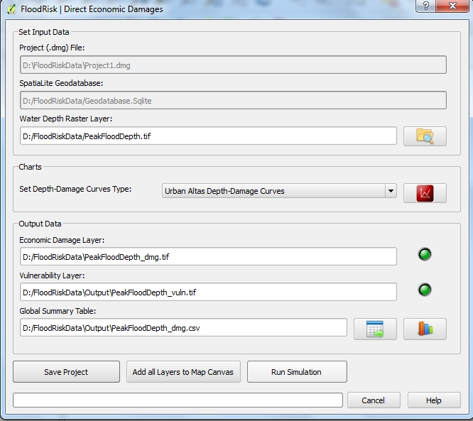

Direct Economic Damage¶
The Direct Economic Damage window allows you to asses the direct economic damage expected for the structures and for the content of the property at risk.

- Data concern assets at risk and their vulnerability (depth-damage curves) are stored in the geodatabase.
- Data concern the hazard are a map of maximum depth values due to flooding. These data are the output from a 2D hydraulic model and are loaded into the system from any file type GDAL Raster Formats
- The database can contain different types of depth-damage curves: before performing the calculation you must choose from those available and you can view the Charts.
- Results are maps of damage and vulnerability to residential, commercial and industrial property and a global summary table of the results which are also displayed in graphical form (histogram).
The files of results are:
Economic Damage Layer (*_dmg.tif): a GeoTIFF File Format having two output bands:
band1: economic damage expected for the structures (Euro per square meter) band2: economic damage expected for the contents (Euro per square meter) Vulnerability Layer (*_vuln.tif): a GeoTIFF File Format having two output bands:
band1: vulnerability for the structures (% of damage) band2: vulnerability for the contents (% of damage) Global summary table (*_dmg.csv): a csv File Format containing the table of results grouped by class of asset